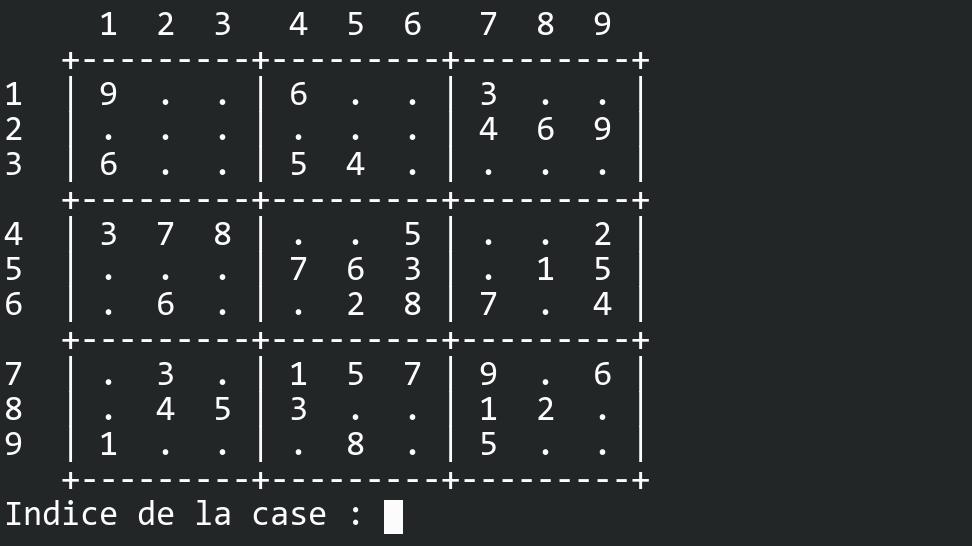
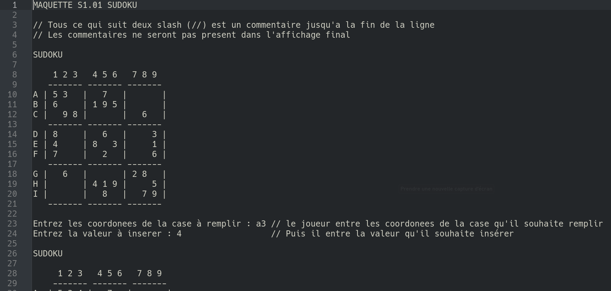
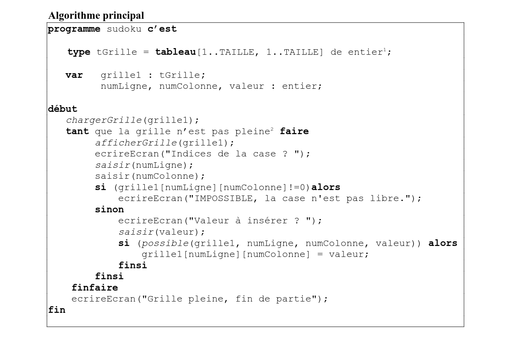
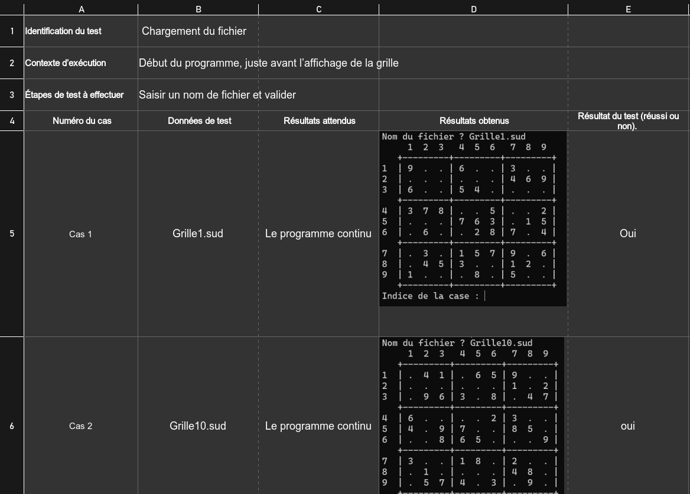
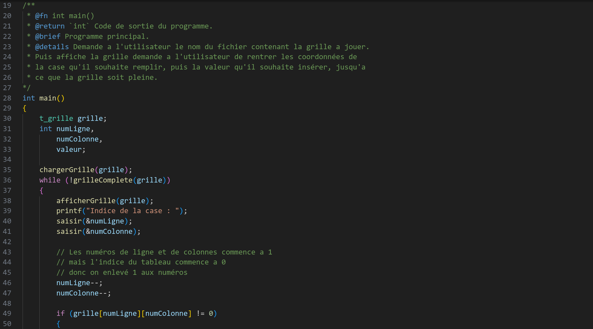
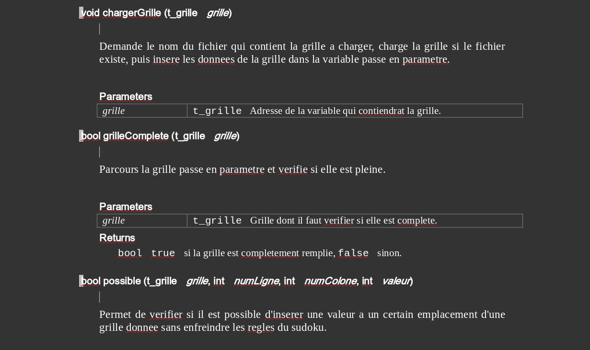

Sudoku
Compétence associé : Réaliser un développement d’application
J’ai réaliser ce projet dans le cadre de mes études dans le but d’implémenter un besoin client. J’ai premièrement conçu et écris en C un programme permettant de compléter une grille de Sudoku. Dans une deuxième partie, j’ai développer un programme permettant de compléter n’importe quelle grille de Sudoku.

J’ai commencer par réaliser une maquette du sudoku. La maquette permet de visualiser à quoi pourrai ressembler le résultat final.


J’ai ensuite réfléchi sur l’algorithme à utiliser pour faire fonctionner le programme.
Afin de pouvoir m’organiser sur les objectifs de chaque parties de mon code, j’ai réaliser un cahier de test qui recense les différentes situations qui pourrai se produire et le comportement attendu pour chacune de ces situations.


Enfin, j’ai écris le code du programme en C en respectant les contraintes du cahier de tests.
Afin de rendre mon code maintenable, j’ai réaliser la documentation du projet au format rtf.
